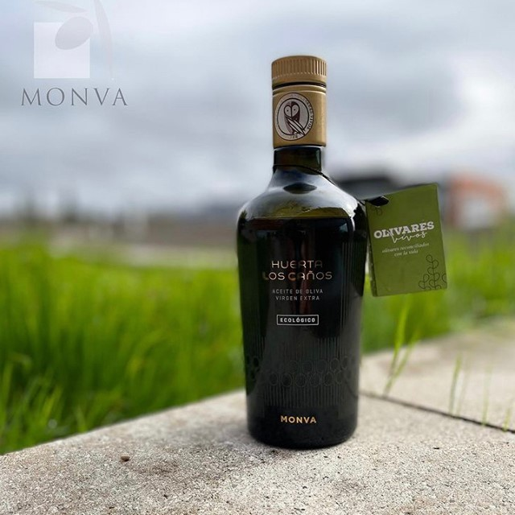

Olivy podľa @spanelsko_na_taliri — Normy Jedál
Víte, že olivový olej může vonět i po čerstvě posekané trávě? A také po rostlinkách rajčete, banánu, nebo artyčoku? Konkrétně je to tento bio extra panenský Huerta los Caños. 🍅🌱🍌⠀⠀⠀⠀⠀⠀⠀⠀⠀
⠀⠀⠀⠀⠀⠀⠀⠀⠀
#jimezdrave #olivovyolej #premiovyolivovyolej #extrapanenskyolivovyolej #olivy #dieta #redukcnidieta #aove #evoo #spanelskonataliri #extravirginoliveoil #healthyfood #luquidgold #antioxidanty